Correlation breaks inside the per-variable bands: univariate bands detect nothing beyond chance (−0.04); the best multivariate model detects 0.34 beyond chance.
$ cat projects/greenhouse-anomaly-detection/README
Hidden anomalies in a greenhouse climate
Multivariate anomaly detection · white-box · from evaluation to deployment
A fault can leave temperature, humidity and CO₂ each inside their normal band while their combination is impossible. How far does a strictly white-box approach go in detecting such anomalies — starting from the Mahalanobis distance and relaxing one assumption at a time — and does the winner still work when it can only learn from the past?
- 6 compartments · Dec 2019 → May 2020
- 5-minute data · 47,809 steps each
- 15 detectors · 8 method families
- 5 injected anomaly types + 7 real faults
- 116 tests
01. Answer in brief
Top group for 5 of 6 anomaly types, 1.08% false alarms at a nominal 1%, 7/7 real faults, alarm attributed to the right variable 91% of the time.
The best black-box benchmark (an autoencoder) is below the context-residual models on every anomaly type.
Refitted weekly, with thresholds from past out-of-sample scores. Caveats: 2.7% over the whole season, and a threshold one abnormal week can inflate.
02. The question
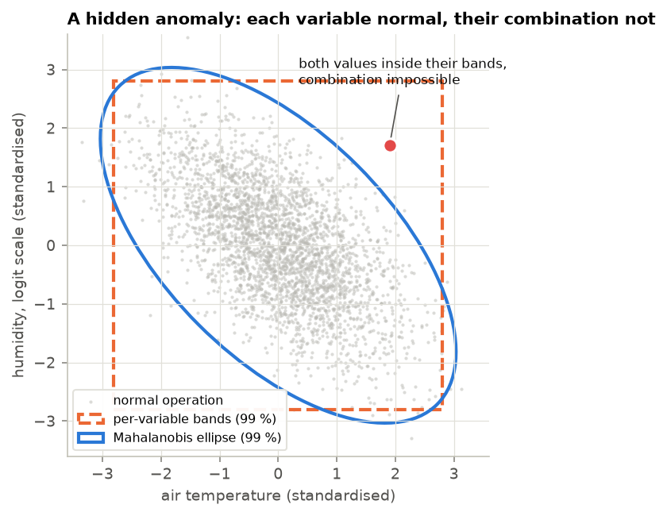
A greenhouse climate is regulated through coupled variables: switching the lamps on heats the air and lowers its relative humidity; opening the vents pulls temperature, humidity and CO₂ towards the outdoor values. Monitoring each variable against its own band misses faults that break these relations — a stuck or drifting probe, a failed aspiration fan, lamps on without the expected warming.
The textbook answer is the Mahalanobis distance, the distance to the centre of a multivariate Gaussian in units of its own covariance:
D²(x) = (x − μ)ᵀ Σ⁻¹ (x − μ)Its assumptions — one Gaussian regime, clean training data, independent samples — are all violated by greenhouse data. The project relaxes them one at a time and measures what each step buys, under a strict white-box rule: every alarm must be explained per variable, every threshold must have a stated false-alarm rate.
Data. The Autonomous Greenhouse Challenge, 2nd edition (Wageningen University & Research, open data): six glasshouse compartments growing cherry tomatoes, five run by AI teams and one by commercial growers. Light and airflow are not measured indoors, so the question became: is the measured climate consistent with what lamps, set-points and weather imply? Monitored: air temperature, humidity (logit scale), CO₂. Context: lamps × sun regime, time of day, weather, the realised climate set-points.
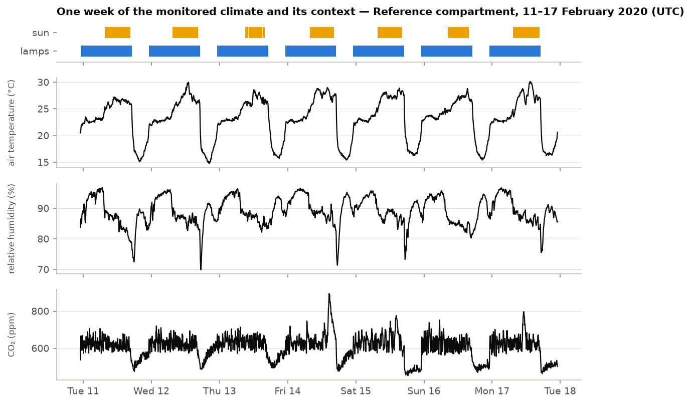
03. Design: built to avoid fooling myself
There are no anomaly labels, so the evaluation was designed — and frozen in a git tag — before the first method ran.
- Blocked split. A chronological split confounds calibration with seasonal drift (clean late-spring data exceed winter-trained bands 2–27% of the time). Seven-day blocks in the pattern train · train · train · validation · test, with a one-day buffer, put every season in every set. Weekly past-only refits came later, as the deployment check.
- Synthetic anomalies with a null control. Five types injected into the held-out weeks with fixed seeds. Every detection rate is reported as an excess over the same windows on clean data, so chance alarms do not count.
- Interior check. Spliced injections create jumps at their edges that one-step change detectors react to; detection is also counted only inside the event, away from its edges.
- Honest intervals. Alarms come in runs, so every rate has a block-bootstrap interval resampling whole compartment-weeks; independent-row intervals would be about ten times too narrow.
- Flag, don't delete. Faulty-looking values are flagged, never removed: they are the seven real sensor faults of the test set (including a temperature reading that drops to −1 °C).
- Every decision logged. 32 decisions with their rationale and the alternatives rejected, 28 lab-book entries with a falsifiable hypothesis each, negative results kept.
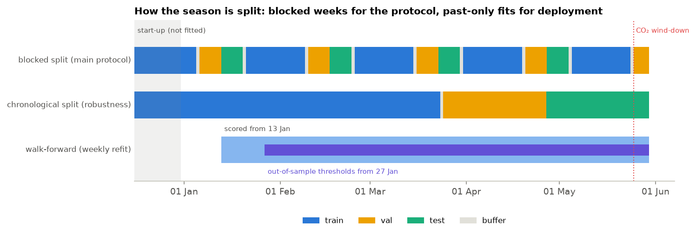
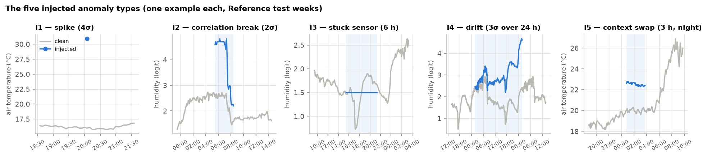
The method ladder
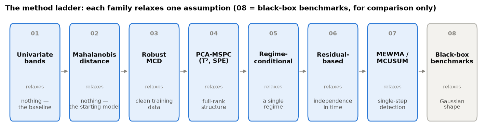
| # | Family | Relaxes | Outcome |
|---|---|---|---|
| 01 | Univariate bands | — (baseline) | Calibrated; blind to in-band breaks |
| 02 | Mahalanobis distance | — (starting model) | Calibrated; sees in-band breaks, weakly |
| 03 | Robust covariance (MCD) | Clean training data | Rejects normal sunny middays: "normal" is a mixture |
| 04 | PCA process control (T², SPE) | Full-rank structure | No gain with three variables |
| 05 | Regime-conditional | A single regime | Regime labels alone: miscalibrated; context regression: calibrated and strong |
| 06 | Residual-based (VARX, static) | Independence in time | One-step innovations detect changes; static residuals detect states |
| 07 | Control charts (MEWMA) | Single-step detection | Best for stuck sensors and drifts; λ = 0.2 the best compromise |
| 08 | Black-box benchmarks | Gaussian shape | Below the white-box models on every anomaly type |
The recommended detector is a multivariate exponentially weighted moving average (MEWMA) chart on the context residual — the measured climate minus its linear prediction from time of day, weather and the exogenous set-points:
e(t) = x(t) − Bᵀ f(c(t))Z(t) = λ e(t) + (1 − λ) Z(t−1)
T²(t) = Z(t)ᵀ ΣZ⁻¹ Z(t)
Each alarm is explained by reconstruction-based contributions: how much the score drops when one variable is replaced by its best reconstruction from the others.
04. Results under the main protocol
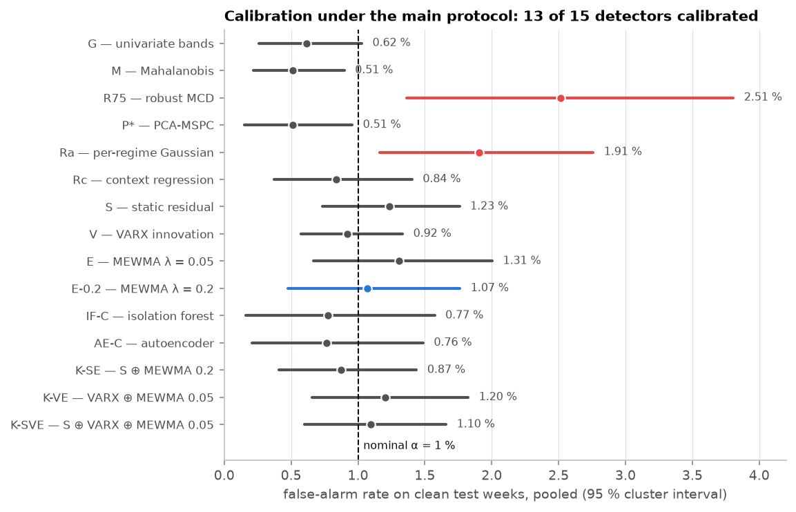
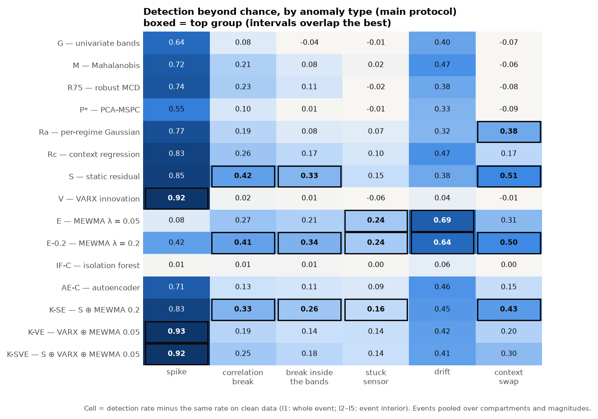
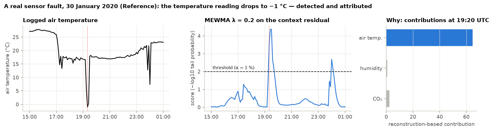
- Attribution works, the T²/SPE split does not. With three monitored variables there is no low-dimensional structure to split; contributions name the injected variable in 86–91% of detected events.
- Disease-risk windows. No detector alarms more often during sustained humidity above 90% (a grey-mould risk condition): humid nights are normal operation here. Without disease records, this is association only.
- Two checks on the winner. Two of the 55 compartment × set-point pairs turned out to be computed by the controller from the climate itself, which would leak the true state into a synthetic test; the recommended detector uses the exogenous set-points only. Its λ was chosen after seeing test results — so its levels are optimistic — but a bootstrap of the whole selection rule picks it 98% of the time.
05. From evaluation to deployment
The blocked split fits each model on weeks that surround its test weeks. A deployed detector can only learn from the past. Four checks, each with its hypothesis and decision rule written before it ran, measure the distance.
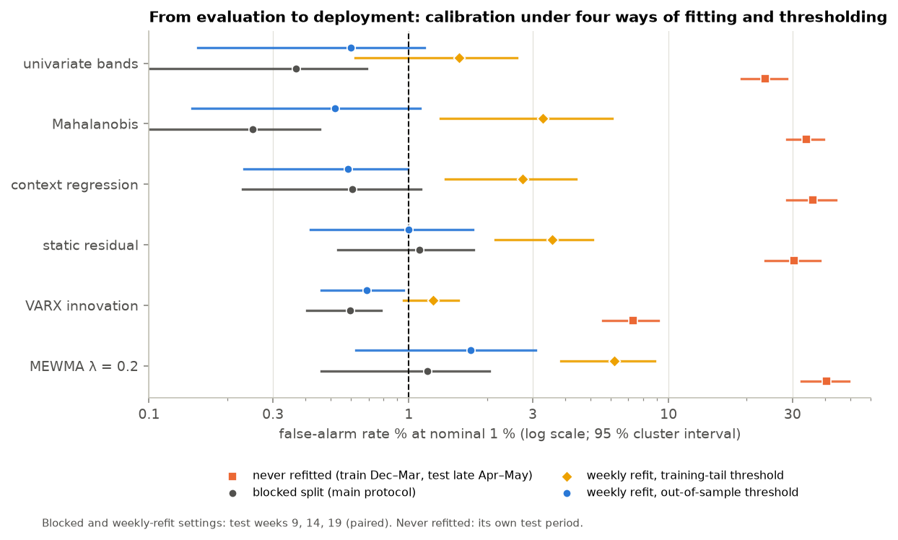
| Setting | Context-residual MEWMA | Verdict |
|---|---|---|
| Never refitted (train Dec–Mar, test late Apr–May) | 40.6% | fails: every detector 7–41% |
| Fitted on another compartment | 37% (median) | fails: context models do not transfer |
| Refitted weekly, training-tail threshold | 7.5% | detection kept, calibration lost |
| Refitted weekly, out-of-sample threshold | 1.7% (0.6–3.1) | near nominal, top group 5/6 |
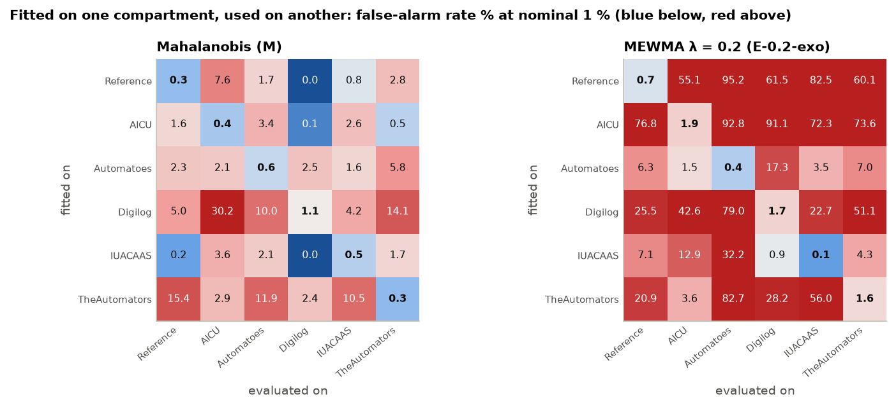
Why weekly refitting is not enough. The threshold is read from the residual tail of the very rows the model was just fitted on, and residuals one week ahead are wider: in four compartments, next week's 1% level lies beyond the largest score of the training window. The fix follows from the mechanism — take each week's threshold from the previous four weeks' out-of-sample scores.
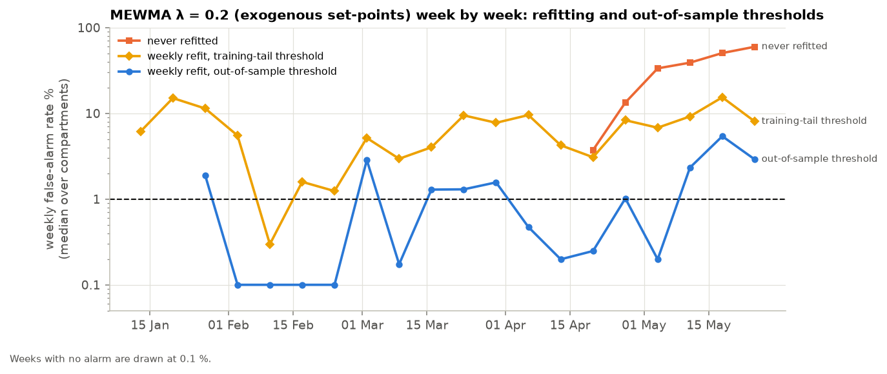
Headline. Refitted every week on the last four weeks and alarmed against a threshold from past out-of-sample scores, the context-residual MEWMA is near nominal on the test weeks (1.7% at 1%) and keeps its breadth. It still alarms 2.7% over the season (about three notifications a week), and one abnormal week can inflate its threshold a hundred-fold — enough, in one compartment, to hide the four real faults that followed. The context regression is the robust alternative (0.6%, all four faults caught).
06. What I take from it
- "Normal" is conditional. The information is in the climate given its exogenous context; most of the work is choosing that context and excluding the variables that react to the anomaly itself.
- Calibrate on the statistic's own tail. Gaussian limits — χ², F, the textbook MEWMA covariance (off by 10³–10⁵ here) — fail on real residuals.
- Detectors specialise, and an evaluation must be able to tell a change detector from a state detector — hence the interior check.
- White-box was not a handicap. Interpretable models matched or beat the black-box benchmarks on every anomaly type.
- Interpolation is not extrapolation. The models that win within a season are the most specific to it.
- A threshold is part of the model. Refitting fixes the model, not its calibration; only a threshold estimated out of sample holds in deployment — and that estimator must itself be robust.
07. Caveats, stated up front
- One season, one crop. Six compartments of one tomato season; the anomalies are mostly synthetic; the seven real faults are all in one compartment.
- Selected on test data. The recommended λ was chosen after seeing the test results; its levels are optimistic, even though the choice is stable.
- Deployment numbers are thin. The out-of-sample thresholds need two weeks of past scores, so the deployment check rests on three test weeks and four real faults.
- The threshold estimator is fragile. A robust version (e.g. the median of weekly quantiles) is deliberately not tuned on these data: it belongs with a confirmatory test.
- No disease labels. The link to disease risk is association only.
08. Next, and stack
Next: a confirmatory test on unseen data — freeze the deployment setting in a git tag, write the predictions down, then evaluate once on another edition of the challenge (2018, cucumber, same facility) — with a robust out-of-sample threshold tested there, not here.
- Python
- uv
- pandas
- NumPy · SciPy
- statsmodels
- scikit-learn
- Mahalanobis · MCD · PCA-MSPC
- VARX · MEWMA
- Block bootstrap
- Reconstruction-based contributions
- pytest
- matplotlib